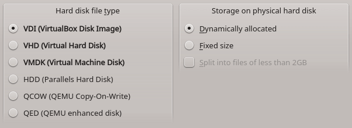

В системе виртуализации VirtualBox существует формат виртуального диска VDI, который очень часто используется по умолчанию. Данный формат может содержать как диск фиксированного размера, так и динамически расширяемый.

Перед тем как монтировать образ диска, хорошо бы уметь определять формат диска с помощью консоли, тем более что VDI-файл не всегда находится под контролем VirtualBox, например когда файл образа принесли с другого компьютера и еще не настраивали виртуалку.
Чтобы узнать вариант формата VDI, можно воспользоваться командой:
# VBoxManage showhdinfo путь_к_файлу_образа_диска.vdi
UUID: 9bbd8dbe-d0c7-4db7-9717-85313fe8e721
Parent UUID: base
State: created
Type: normal (base)
Location: путь_к_файлу_образа_диска.vdi
Storage format: VDI
Format variant: dynamic default
Capacity: 16384 MBytes
Size on disk: 6330 MBytes
Encryption: disabled
Для файла фиксированного размера значение параметра Format variant будет fixed default. Для динамически расширяемого образа - dynamic default.
Монтирование образа фиксированного размера
Если образ содержит диск фиксированного размера, то его можно смонтировать просто командой mount, указав в опциях смещение в файле образа, начиная с которого идут данные диска.
Скрипт, который примонтирует фиксированный образ выглядит так:
#!/bin/bash
# Настройка файла образа и каталога монтирования
VDIfile=путь_к_файлу_образа_диска.vdi
mountingpoint=/media/vdi
# Поиск смещения
offData=$( VBoxManage internalcommands dumphdinfo "$VDIfile" |grep offData | sed 's:.*offData=\([0-9]*\).*:\1:' )
offset=$(( $offData + 32256 ))
# Монтирование
mount -t ext4 -o rw,noatime,noexec,loop,offset="$offset" "$VDIfile" "$mountingpoint"
Монтирование динамически расширяемого образа
Если же образ представляет собой динамически расширяемый файл VDI, то просто так примонтировать его не получится. Вопрос: как же "заглянуть" внутрь динамического диска? Хитрость в том, что монтирование такого динамического образа диска делается в два этапа.
1. Создается файл блочного устройства через утилиту qemu-nbd из состава пакета qemu. (Опытные пользователи знают, что VirtualBox - это всего лишь графическая надстройка над системой виртуализации qemu). Для этого используется следующая команда:
qemu-nbd -c /dev/nbd0 "путь_к_файлу_образа_диска.vdi"
Эта команда создаст файл устройства /dev/nbd0, который по своей сути, представляет такой же файл устройства диска, как и всем привычный /dev/sda и ему подобные.
2. Партиция (раздел) устройства /dev/nbd0 монтируется в обычный каталог на диске следующей командой (каталог обязательно должен существовать на момент монтирования):
mount -o noatime,noexec /dev/nbd0p1 /media/vdi
Здесь можно увидеть, что для доступа к разделу VDI-файла используется файл устройства /dev/nbd0p1, которое обеспечивает доступ к разделу (так же как это происходит и с /dev/sda0, /dev/sda1 и т. д.). Если на устройстве несколько разделов, то доступ к ним производится путем изменения номера p1 на необходимый (счет идет с единицы).